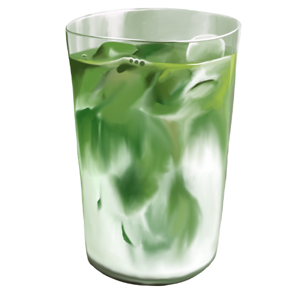

Home
Contact
Learn
History
How to Make Matcha
Blog
Recipes
Recipes
Matcha Latte (Iced)

Prep Time:
5 min |
Servings:
1
Ingredients:
1 tsp matcha powder
2 oz hot water
1 cup milk or alt milk
Ice cubes
Sweetener (optional)
Instructions:
Sift matcha into a bowl.
Add hot water and whisk until frothy.
Fill a glass with ice and pour in milk.
Top with matcha mixture. Sweeten to taste!